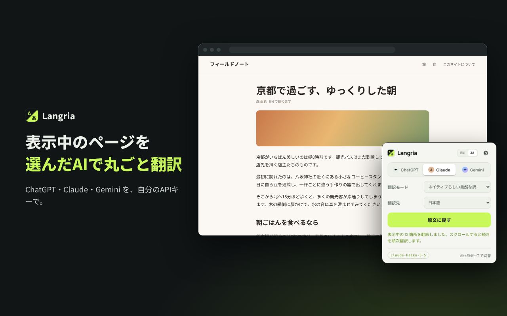
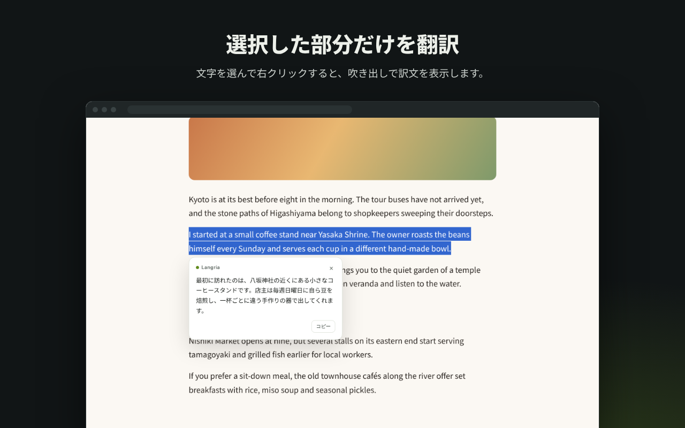
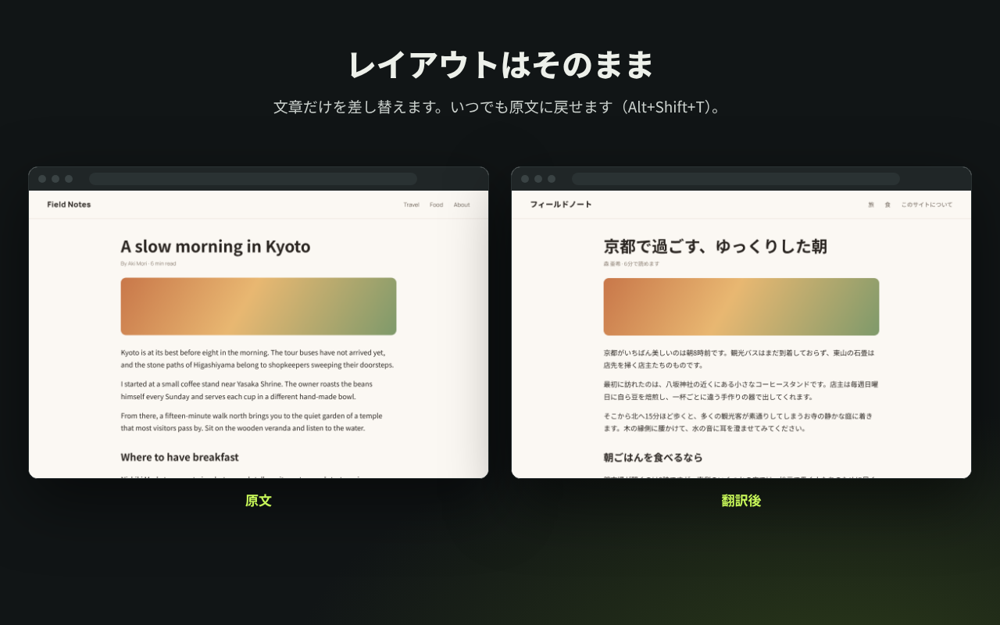
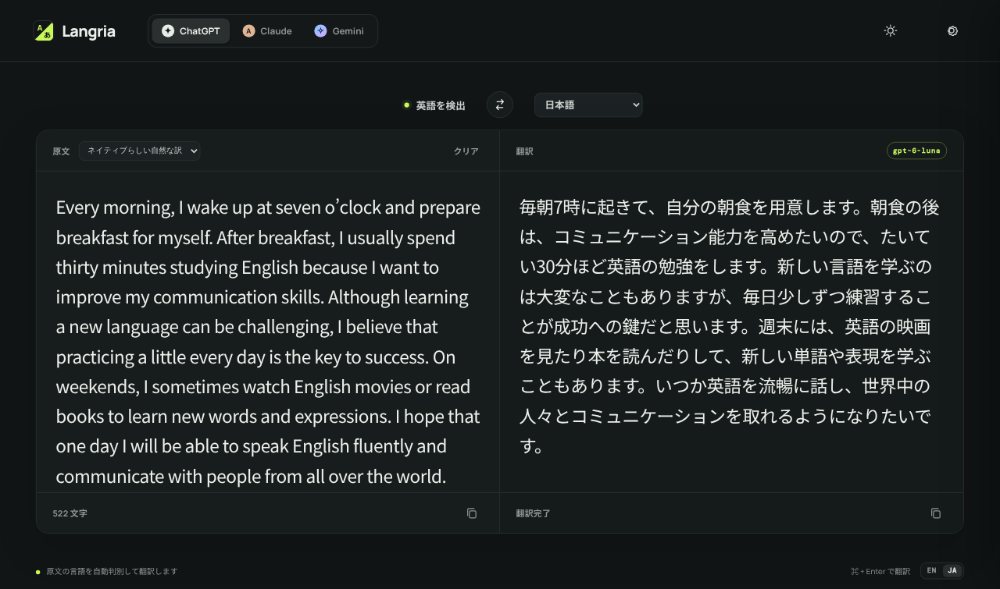

Langria
Langria
Langria – AI Webページ翻訳
表示中のWebページや選択した文章を、選んだAIサービス — ChatGPT（OpenAI）・Claude（Anthropic）・Gemini（Google）— で好きな言語に翻訳します。Chrome 拡張機能と、入力・貼り付けた文章を翻訳するシンプルなWebアプリがあります。

- ご自身のAPIキーを使い、文章はブラウザから選んだサービスへ直接送られます。
- Langria 独自のサーバー、アクセス解析、トラッキング、広告はありません。
- Google AI Studio で取得できる無料の Gemini APIキーがあれば、すぐに試せます。
Chrome拡張機能
表示中のWebページを翻訳します。ページのレイアウトはそのままで、ワンクリックで原文に戻せます。
- 拡張機能の設定画面で、OpenAI・Anthropic・Google Gemini のいずれかのAPIキーを入力します。
- ツールバーのアイコンを開いて「このページを翻訳」を押します。画面に見えている部分から先に翻訳し、残りはスクロールに合わせて翻訳します。
- 「原文に戻す」または Alt+Shift+T で原文に戻せます。一部だけ訳したいときは、文章を選んで右クリックし「Langria で「…」を翻訳」を選びます。


Webアプリ
入力・貼り付けた文章を翻訳するツールです。原文の言語は自動で判別し、入力の手を止めると少し後に翻訳します。

- 使えるサービス・翻訳先の言語・翻訳モードは拡張機能と同じです。
- 入れ替えボタンで左右の文章と翻訳先の言語を入れ替えられ、返信を書くときに便利です。
- ライトモードとダークモードに対応しています。
- ビルド不要の静的サイトです。リポジトリのフォルダを（
python3 -m http.serverなどで）配信し、ブラウザで開くだけで使えます。詳しくは README をご覧ください。
主な機能
- ChatGPT / Claude / Gemini を切り替えられます。モデルもサービスごとに設定できます。
- 英語・日本語・中国語・韓国語・スペイン語・フランス語・ドイツ語など多数の言語に翻訳できます。一覧にない言語も指定できます。
- 翻訳モードは5種類（原文に忠実 / ネイティブらしい自然な訳 / ビジネス文書向け / 会話・SNS向け / 技術文書向け）。
- APIキーはパスキー（Touch ID など）またはパスフレーズで暗号化できます。
- 画面の表示は日本語と英語に対応しています。
リンク
Langria は個人による独立したプロジェクトであり、OpenAI・Anthropic・Google とは提携しておらず、これらの企業による承認を受けたものではありません。